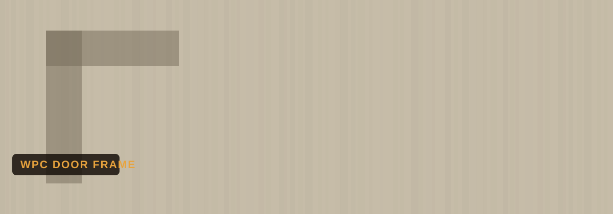

Home › Boards › WPC Door Frame
Mohali · Serving Punjab & Haryana
Also searched as: WPC door frame, WPC chaukhat, PVC door frame, waterproof door frame

Get today's rate on WhatsAppWPC door frames — chaukhat — never swell, rot or get eaten by termites, unlike wooden frames. That makes them the fastest-growing choice for bathroom, kitchen and even main door frames across Punjab. Ready sizes, easy installation. We stock SV Woods and GM.
Rates are indicative and change with the market. Message us for today's exact rate, sizes & bulk pricing.
Check exact price nowStandard WPC door frames (chaukhat) run roughly ₹1,600–₹3,200 per set depending on size and brand. WhatsApp +91 76964 49897 for today's exact rate for SV Woods and GM.
WPC frames are 100% waterproof and termite-proof — they never swell, rot or warp like wooden chaukhat, especially in bathrooms and kitchens. They also install faster.
They're similar in purpose — both waterproof — but WPC (wood plastic composite) is denser and stronger than plain PVC, holding screws and hinges better for door frames.